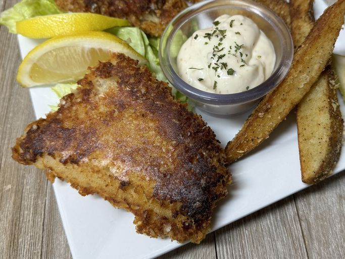

Fish

Recipe
A perfect recipe for cooking fish. Good for a snack of along side a bigger meal.
Ingridents
- 2 cups dry potato flakes
- 1 cup all-purpose flour
- 1 tablespoon garlic powder
- 1 tablespoon seasoning salt
- 1 tablespoon ground black pepper
- 2 teaspoons cayenne pepper, or to taste
- 4 (6 ounce) fillets cod
- 4 skinless, boneless chicken breast halves - pounded thin
- 2 cups butter flavored shortening, for frying
Steps
- In medium bowl, combine the potato flakes, flour, garlic powder, seasoning salt, black pepper, and cayenne pepper.
- Soak fish filets in bowl of cold water.
- In a deep skillet or deep fryer, melt and heat the shortening to 350 degrees F (175 degrees C).
- Dredge fish filets in dry mixture and fry in the hot oil for 5 minutes or until fish flakes apart easily. Remove from oil and place on paper towels to absorb excess oil.